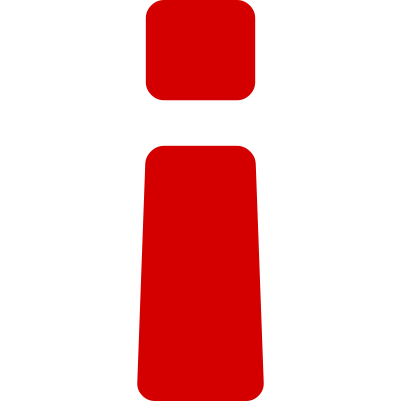
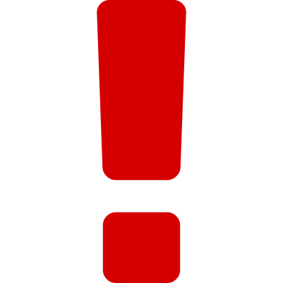

Con material creado especialmente para estudiantes de las universidades del pais.
 Clases en Personalizadas, presenciales o online costo en bs.f depende de las horas de estudio  Información e inscripciones

Numero para venezuela 0414-7029280
twitter @Titans_is_tips
Correo mariojosuexz@gmail.com
Para inscribirte envianos un correo con tus datos ( nombre, CI y nombre de la universidad o UE ) y desde donde nos conoces